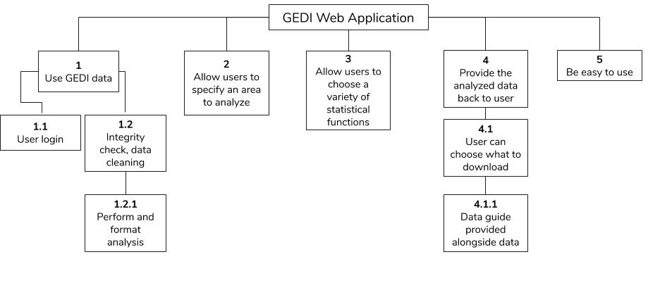

Project Requirements
- Our solution must download and analyze GEDI data
- 1.1 Our solution will implement a user login
- 1.2 Our solution must perform an integrity check and data cleaning
- 1.2.1 Our solution must perform and format the analysis
- Our solution must allow users to specify an area to analyze
- Our solution must allow users to choose a variety of statistical functions
- Number of Observations - The total number of lidar pings that were performed in that area
- Data Quality - The average quality of the observations
- Density of Observations - The amount of observations per km2
- Standard deviation of the density of observations - Standard deviation performed on the density of observations
- Mean Vegetation Height - The average vegetation height found over the entire area
- Standard Deviation of Vegetation Height - The standard deviation of the vegetation heights found over the entire area
Our solution must provide the analyzed data back to user
- 4.1 Our solution must allow the user to choose what to download
- 4.1.1 Our solution must provide a data guide alongside data
